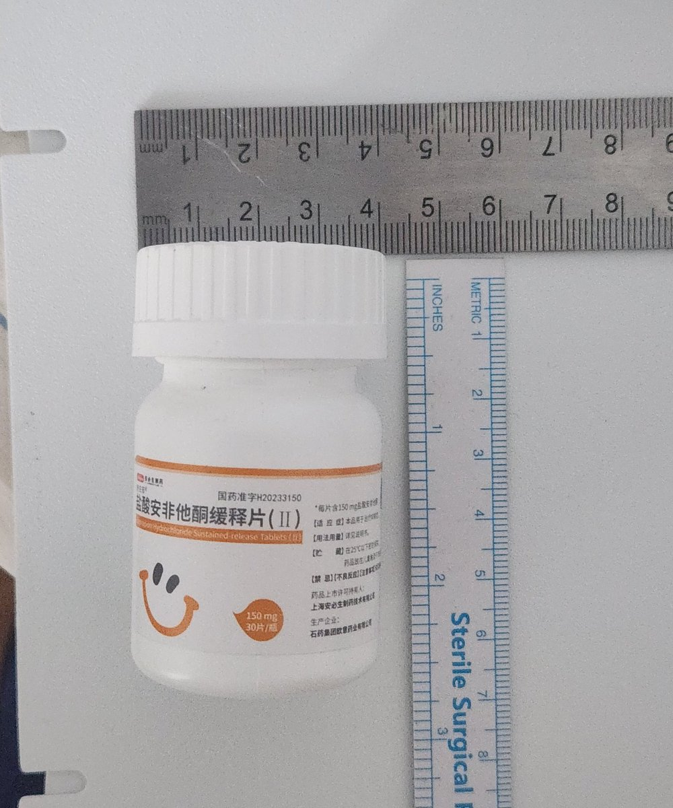
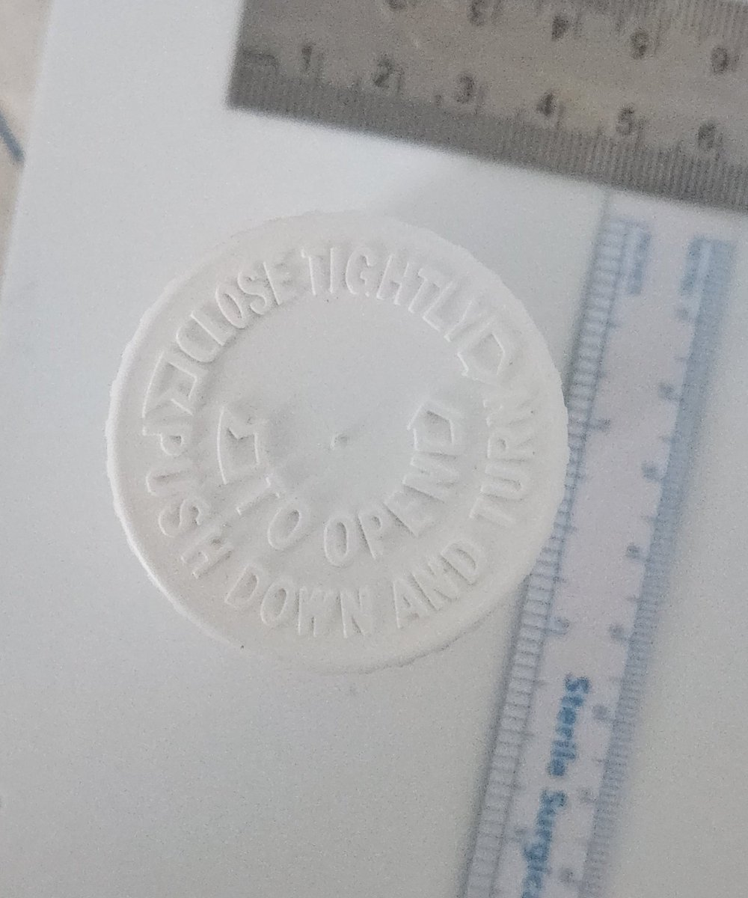

御坂 O.o 雪春📕 （雪似梅花）爱这个世界
@0502railgun1949
@Strf_9040C 现在正在吃


STRIDSFORDON 9040C “Ljusdimma” 🏳️⚧️
@Strf_9040C
外包装：
1. 童锁机构： 药瓶盖采用了双层结构设计。不同于普通瓶盖，它需要“先向下按压，同时逆时针扭动”（Push Down and Turn）才能顺利开启。
2. 设计初衷： 这种设计能有效防止未成年人误当成糖果吞服
3. 密封性： 瓶身小巧，高度约在7cm左右，避光白色瓶体能很好地保护活性成分稳定。 https://t.co/odvw6HOb8v